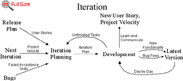

An iteration planning meeting
is called at the beginning of each iteration to produce that iteration's plan of programming tasks. Each iteration
is 1 to 3 weeks long. User stories are chosen for this iteration by the customer
from the release plan in order of the most valuable to the customer first. Failed acceptance tests to be fixed are also selected. An iteration planning meeting
is called at the beginning of each iteration to produce that iteration's plan of programming tasks. Each iteration
is 1 to 3 weeks long. User stories are chosen for this iteration by the customer
from the release plan in order of the most valuable to the customer first. Failed acceptance tests to be fixed are also selected.
The user stories and failed
tests are translated into the programming tasks that will support them. Tasks are written down on cards. These
task cards will be the detailed plan for the iteration.
Each task should be 1 to
3 ideal programming days in duration. Ideal programming days are how long it would take you to complete the task
if there were no distractions. Tasks which are shorter than 1 day can be grouped together. Tasks which are longer
than 3 days should be broken down farther.
Developers sign up for the
tasks and then estimate how long their own tasks will take to complete. It is important for the developer who accepts
a task to also be the one who estimates how long it will take to finish.
The project
velocity is used to determine if the iteration is over booked or not. Total up the time estimate in ideal programming
days of the tasks, this must not exceed the project velocity from the previous iteration. If the iteration has
too much then the customer must choose user stories to be put off until a later iteration (snow plowing).
If the iteration has too
little then another story can be accepted. The velocity in task days (iteration planning) overrides the velocity
in story weeks (release planning) as it is more accurate. |

It is often alarming to
see user stories being snow plowed. Don't panic. Remember the importance of unit testing
and refactoring. A debt in either of these areas will slow you down. Avoid adding any
functionality before it is scheduled. Just add what you need for today. Adding anything
extra will slow you down.
Don't be tempted into changing
your task and story estimates. The planning process relies on the cold reality of consistent estimates, fudging
them to be a little lower creates more problems.
Keep an eye on your project
velocity and snow plowing. You may need to re-estimate all the stories and re-negotiate the release plan every
three to five iterations, this is normal. So long as you always implement the most valuable stories first you will
always be doing as much as possible for your customers and management.
An iterative development
style can add agility to your development process. Try just in time planning by not planning specific programming
tasks farther ahead than the current iteration.
  |